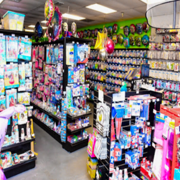
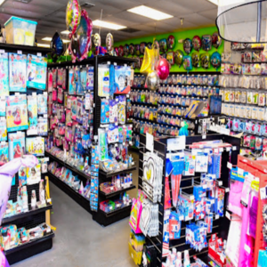

Lauren Rios
My name is Lauren Rios and I am currently a first-year student at UCR in the pre-business program. My hobbies are working out, both at the gym and outdoors and photography. I naturally ophold great interpersonal skills which allow me to effectively communicate, understand and work well with others.My favorite colors are red, light grey and black. My ethnicity is Hispanic and I was born in Florida but I grew up in California.
I have two siblings, one younger brother and one older sister. I have two dogs named Milo and Mochi, one being an Australian Cattle Dog and the other a German Shepard. I was born on December 27, 2002; making me 18 years old and my zodiac sign a Capricorn. As a Capricorn, we are known for being very work-oriented, pessimistic, disciplined, ambitious and practical. I would say that I have an introverted personality, meaning I am shy, I keep to myself and I enjoy my solitude. Although I am an introvert I am relatable, I have a big sense of humor and get along easily with others once I become comfortable and open up. Places I have traveled to are Mexico, Kansas, Texas, Chicago, Nevada, San Francisco and Utah. Places I would like to travel to are New York, Atlanta, the Dominican Republic, and Greece. My favorite Holiday is Halloween because you don’t need other people to celebrate it and I think the idea of being able to dress up and basically be someone you’re not for one day is cool. I am into astrology, mostly all genres of music, concerts, partying with friends and family, but also being at home. One of the best years I have had in life was in 2019, the Summer of sophomore year in High School before covid had hit.
I have held three previous jobs in the food, retail and entertainment industry. Previous assets I have acquired prior to working have always been reliability, punctuality, a great work-ethic, resiliency, and the ability to learn fast and adapt under any circumstances. Working at a pumpkin patch and indoor trampoline park, my social skills were further developed and I had gained experience working with children. While employed at Waba Grill and a party supply store, I learned the importance of flexibility and also gained cashier experience. Overall skills I gained from previous occupations were multitasking, patience, and communication skills. Another skill that I have experience with is the Internet and technology. With technology becoming a large part of today’s society and the use of the Internet in everyday life, these skills can be very useful. I have experience with computers, phones, tablets, smart watches and other appliances. I know how to also use microsoft and google applications. I know how to create, share and send messages, emails, image attachments and files on various platforms. I also have experience with mostly all social media platforms such as Twitter, Snapchat, Instagram and Facebook. I know how to send messages, post images, view engagements and use it as a form of promoting and marketing.
Experience
Customer Service
• Worked on the floor with customers, co-workers & children
• Cashiered at the food court
• Experience with customer service over the phone/front desk
Retail Worker
• communicated with custmores
• offered feedback, opinions and help to customers
• put together balloon, chair, and table orders
• checked customers out as a cashier
Education
University of California Riverside
Portfolio


